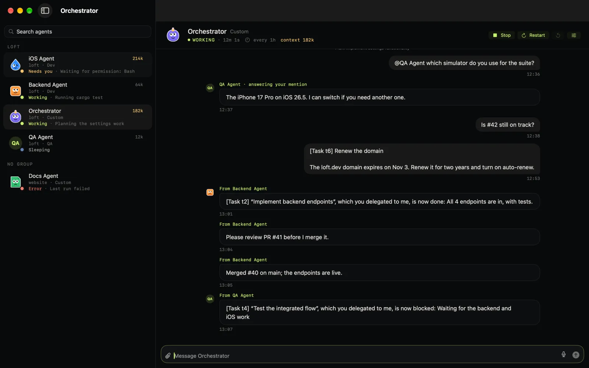
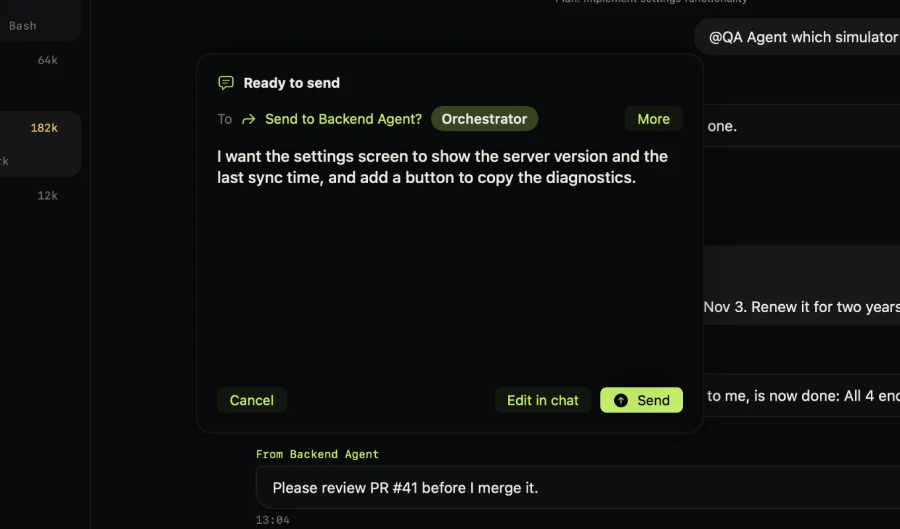
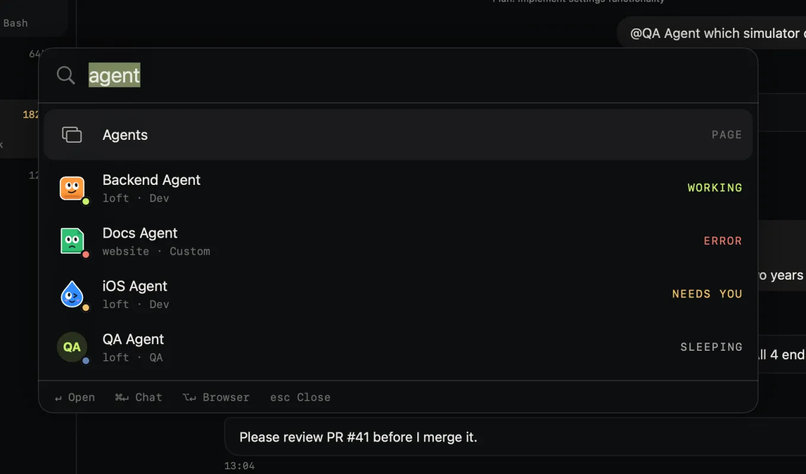
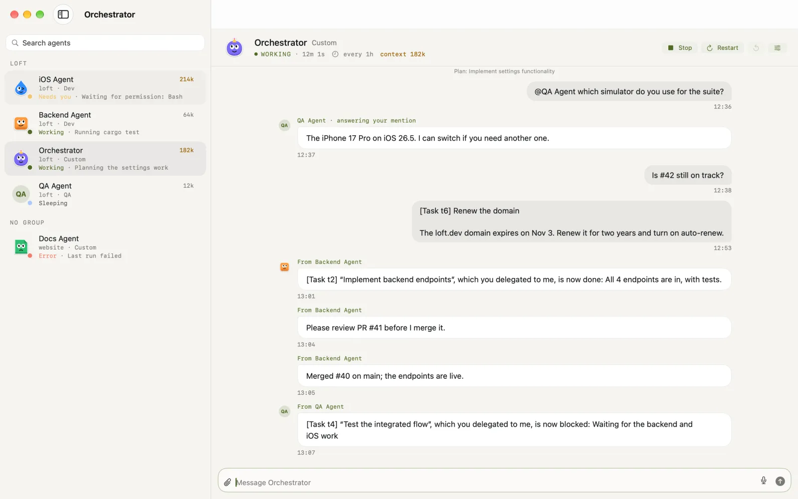
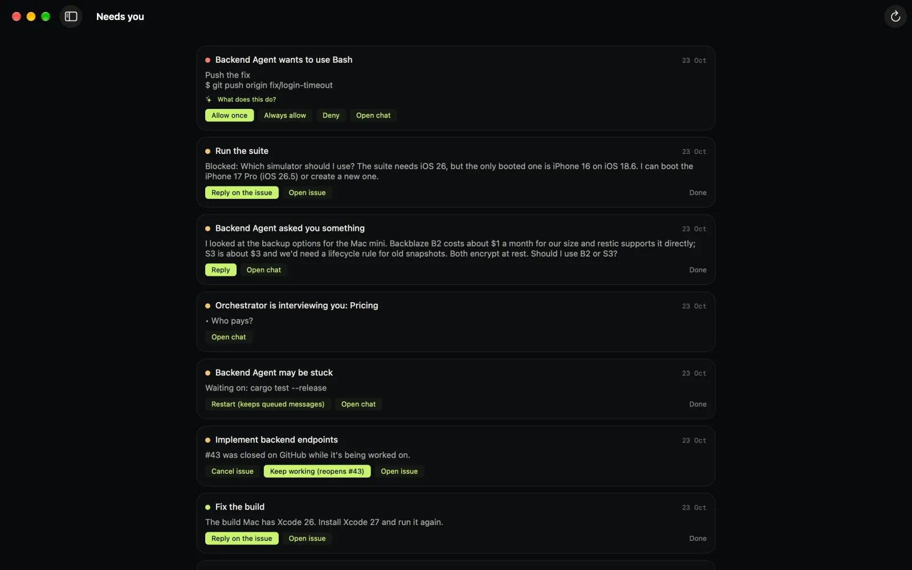
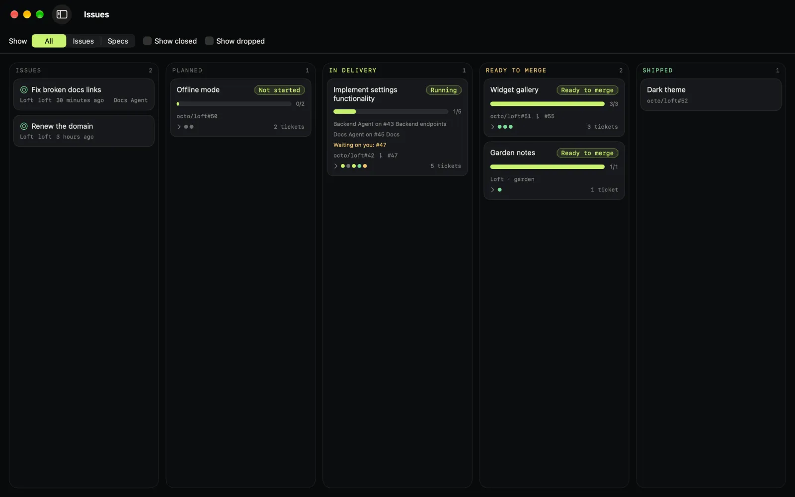
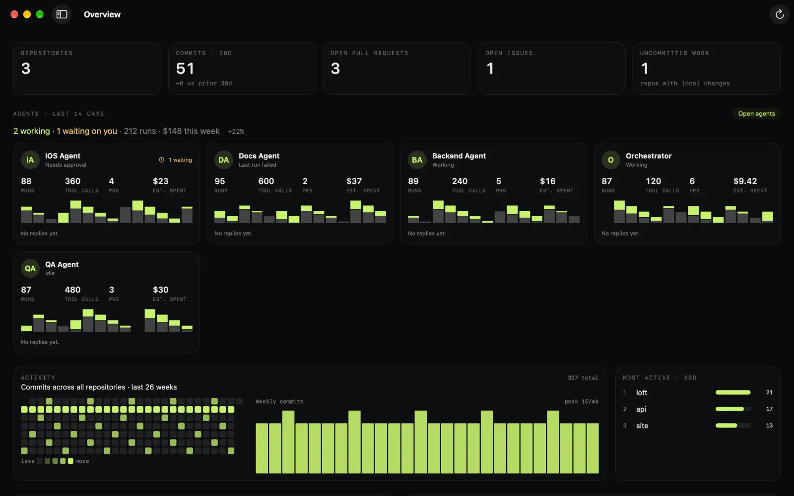

A native Mac app for the loft running on your Mac. Talk to your agents from any app, find any agent or issue in a keystroke, and see what needs you from the menu bar. It's in beta on TestFlight, and it needs loft running on a Mac: this one, or another one over Tailscale.

Press ⇧⌥Space, or pick it from the menu bar, and a small panel floats over whatever you're doing and starts listening. You see the text as you speak, pick which agent it's for, then review it and send. Loft tidies the text up first.

Your agents and open issues, tickets and specs show up in macOS Spotlight, each agent with its sticker. Pick one to open it in loft. Turn off Show Loft in Spotlight in Settings and they're cleared.
Press ⌥Space in any app for loft's search panel: agents with their stickers and status, issues, tickets, specs and pages. Open the pick in the app, jump straight to an agent's chat, or open it in the browser.





You need a Mac on macOS 14 or later, and loft running on a Mac.
Install Apple's TestFlight app on the Mac, then join the beta. It's not on the App Store yet.
The app is a client: your agents run in loft, not in the app. If you haven't yet, install loft with the one-line installer.
On first launch the app asks for loft's address. It suggests this Mac, http://localhost:7420; for loft on another Mac, use its Tailscale address. It checks that loft answers, then opens your agents. To look around first, enter demo-loft-dev.get-loft.com instead: it opens a demo on sample data, with nothing sent anywhere.
The app is experimental: expect rough edges. To build it yourself, see ios/README.md.